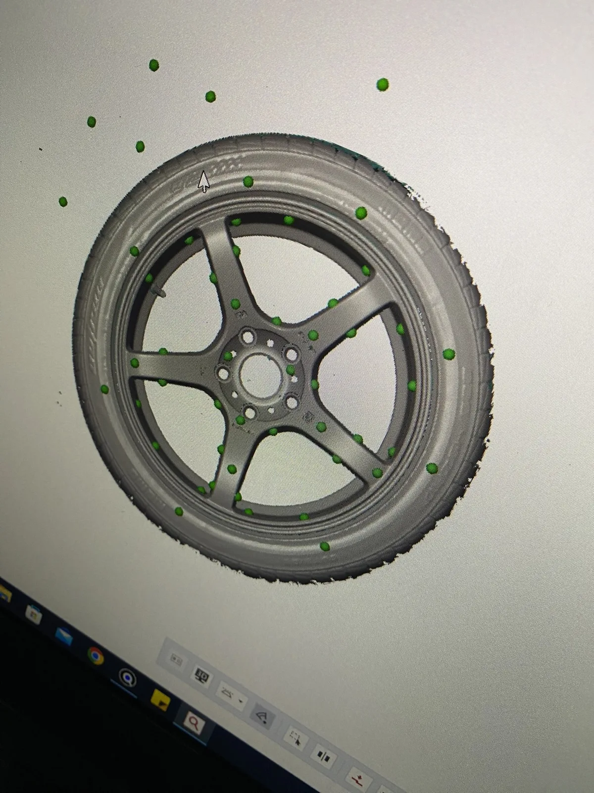

To get a real quote for 3D scanning, reverse engineering or scan-to-CAD, send us six things: photos of the part from every side with something for scale, its approximate size, the material if you know it, what the part is used for, what you want at the end (CAD model, drawing, mesh or made part), and how many you need by when. You do not need a drawing, a scan file or technical words. A clear set of photos on your phone and a few lines of text is enough for us to reply in writing with a quote, or to tell you the one thing we still need. We work in India and the UAE.

Last reviewed: November 2026
Who is this for?
Anyone with a physical part and no clear next step: an owner with an old part and no drawing, an engineer who needs a CAD model, a workshop that must make a spare, or a buyer comparing quotes. If you only know that "the part is broken and I need another one", this list is enough to start.
What should I send? The short list
- Photos from every side. Top, bottom, front, back and both ends, plus a close-up of any damage, thread, marking or number. Put a coin, a scale or a hand next to the part so the size is visible. Use daylight and a plain background.
- The size. Length, width and height in millimetres, or just the longest side. Rough is fine. If it is too big to measure, say so and send a photo with a person or a known object beside it.
- The material. Metal (steel, cast iron, aluminium, brass), plastic, rubber, wood, fibreglass, or "not sure". A magnet test and a photo of the surface are a good start. Material changes how we scan and what the part can be made from.
- What it is used for. Where it fits, what it does, and what loads it. Say whether the new part must fit an existing part, or whether you want a redesign.
- Where the quote is going. What you want at the end: a CAD model (STEP), a 2D drawing, a mesh for printing, an inspection report, or a made part. This decides the work.
- How many, and by when. One part or a batch, a one-time need or a repeat order, and your deadline.
What else helps? Optional, but it speeds the reply
- The part it fits to (the mating part), or a photo of where it fits. A single worn sample does not show which dimensions matter. The mating part shows the real fit.
- Why it failed, if you know: wear, breakage, heat, corrosion. This tells us whether to remake the part as it is or fix the cause.
- Which dimensions matter most, for example a hole spacing, a diameter or a surface that touches another part, and which can be loose.
- A nameplate, part number or machine model. A photo is enough.
- Any drawing, old sketch or catalogue page, even a poor one.
- Where the part is. City and country, and whether it can be sent to us. Small parts can be sent to our Coimbatore facility; larger parts are scanned where they stand, in India and the UAE.
What if I have a scan file already?
Send the file as exported from your scanner, with the units, and do not reduce it first. Then send the same photos and notes above. The file tells us the shape; the notes tell us the purpose. Which formats suit which job is explained in 3D scan file formats.
How do I photograph a part so we can use the photos?
- Six views are the minimum: top, bottom, front, back, left, right. Add close-ups of holes, threads, ribs and any marking.
- Keep the part in focus and the whole part in the frame. Do not use filters.
- Show the size: a ruler, a coin or a hand beside the part.
- Shiny, dark or transparent surfaces photograph badly. Tilt the part against a plain light background and take a second set from a different angle.
- If the part is fixed to a machine, take wide photos of where it sits and close-ups of the part in place. We can scan it where it stands.
What happens after I send it?
- We read your photos and notes and reply in writing. If something is missing, we ask for it in one short message, not a long form.
- We tell you the route. Sometimes the honest answer is that careful measuring and a drawing are enough. When the part is curved, cast, worn or has hidden features, we scan it. See how we rebuild a spare part with no drawing.
- You get a written quote. It states what you receive (for example a STEP file, a drawing, a deviation check), what we assume, and what we still need to confirm. We quote per job and do not publish a price list.
- You decide. Nothing starts until you agree. Fits and tolerances are agreed with you per part.
Common mistakes that slow a quote down
- One photo from one angle. We cannot see the other sides. Send at least six views.
- No size or scale. A part can look the same at 5 cm and 50 cm.
- Not saying what it is for. A part for a display model, a worn bush on a machine and a part to be cast need different work.
- Cleaning or repairing the part first. Keep wear marks, broken pieces and the mating part as they are. They show what happened.
- "I need a quote" with nothing else. The first reply becomes a list of questions. Send the six things and the first reply is a quote.
- Sending a reduced mesh. If you already have a scan, send the original file, not a lighter version.
A note on ownership and confidentiality
Please make sure you own the design or are allowed to make the part before you send it. We rebuild parts for customers who own them or may reproduce them, and we may ask you to confirm this. If the part or machine is confidential, say so in your first message and we will agree how it is handled before you send more.
Part of a wider service
This is the first step of our 3D scanning services in India and reverse engineering services in India, with on-site scanning in India and the UAE.
Have the photos? Send them with the size, material and use for a quote. Send the photos or WhatsApp / call +91 95142 48525, info@vsharksolutions.com. Please say how you found us (what you typed in Google or where you saw us) so we can improve this page.